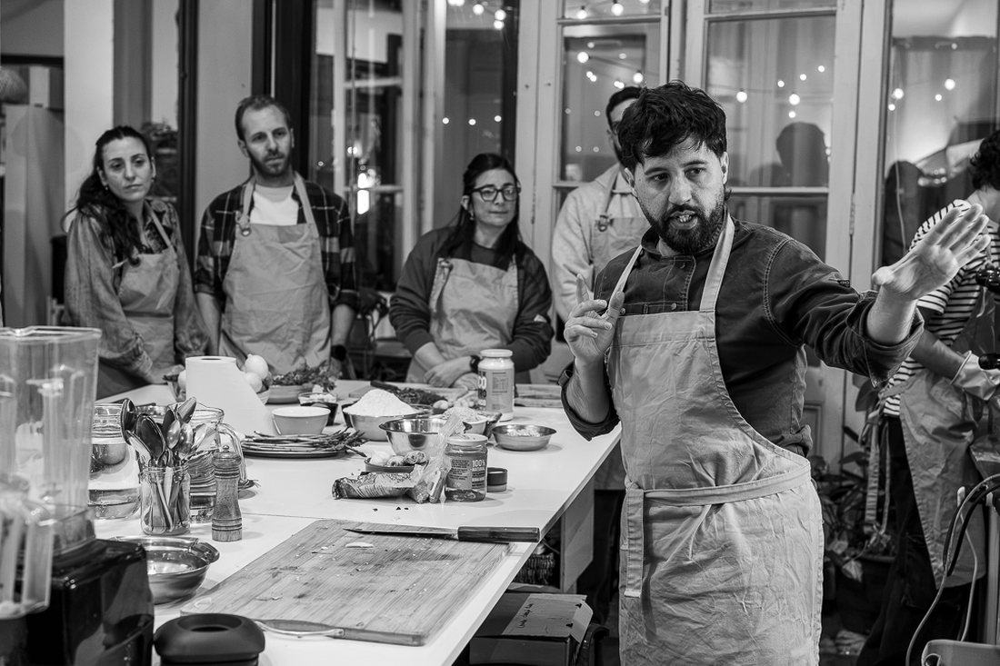

Basada en plantas
Vegetales, hongos, semillas y frutas como protagonistas. No porque está de moda: porque es una forma coherente de relacionarse con el alimento y con los animales.
Clorofila nació de una convicción: cocinar bien es una de las decisiones más importantes del día, y nadie debería depender de una receta para lograrlo.

En 2013, cuando abrimos en Parque Rodó, en Montevideo no había dónde aprender a cocinar saludable con rigor. Circulaban recetas de internet, modas dietéticas y bastante alarmismo, pero faltaba un lugar donde entender el alimento.
La propuesta sigue siendo la misma: enseñar a cocinar explicando lo que está pasando en la olla, para después arreglártelas solo en tu casa.
Más de una década después, con más de 1.200 personas formadas, seguimos siendo el mismo espacio. Sin dogmas, sin alarmismo, sin modas.
Vegetales, hongos, semillas y frutas como protagonistas. No porque está de moda: porque es una forma coherente de relacionarse con el alimento y con los animales.
Enseñamos los porqués: química del alimento, microbiología de la fermentación, comportamiento de las grasas. Cuando entendés el mecanismo, no necesitás recetas.
Ni dietas mágicas, ni alarmismo, ni modas. Una cocina construida con tiempo, evidencia y respeto por los alimentos. Lo que no tiene sentido, no lo enseñamos.
El estudio, los talleres y el curso forman parte de un mismo ecosistema. No es solo aprender a cocinar: es pertenecer a un grupo con la misma forma de pensar los alimentos.

Fundador · Coordina el curso
Chef, docente e investigador gastronómico con 25 años de experiencia y 13 enseñando. Pionero en Uruguay en el desarrollo de una cocina basada en plantas, fermentación y comprensión científica del alimento. Su metodología parte de una premisa simple: para cocinar bien hay que entender qué está pasando dentro de la olla.
Participa en el curso
Licenciada en Nutrición y terapeuta nutricional. Articula alimentación, cocina y bienestar desde una mirada integradora que va más allá de los macronutrientes. Desde hace cuatro años acompaña procesos integrando Ayurveda, fitoterapia y nutrición informada en trauma.
¿Buscás trabajar con Clorofila o con Leonardo en otro contexto? Ver eventos y consultoría →